(back to all presentations)Table of contents |
Author: Johannes Buchner Homepage: http://astrost.at/istics/ Further information: Astrostatistics toolkit of the 21st century astronomerAbstract: I will cover some methods for tasks astronomers face daily: (1) measuring a quantity of an astrophysical object (e.g. luminosity) under uncertainty (2) Combining multiple such uncertain objects for understanding the distribution of the population, sometimes under censorship. (3) comparing complex models of physical effects. New algorithms and easy-to-use implementations, including (Py)MultiNest and Stan, today make powerful tools available for analysing real problems with sufficient complexity. Briefly, I will also give an overview of my X-ray astronomy research, which includes AGN obscuration, SMBH growth over cosmic time, GRBs and the analysis of cosmological hydrodynamic simulations.  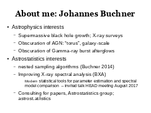
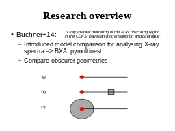
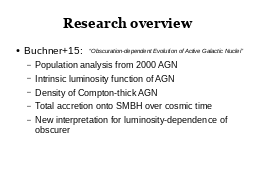
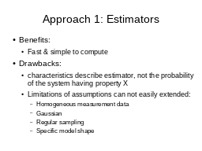
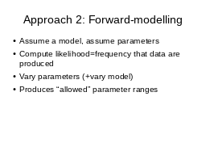
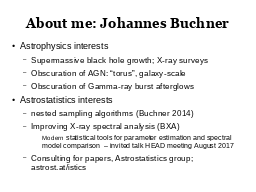
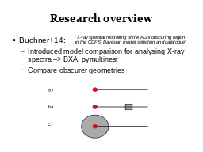
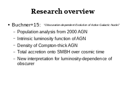
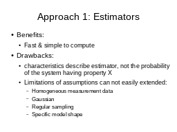
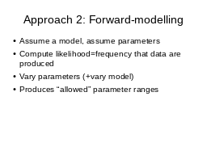
 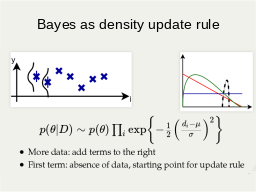
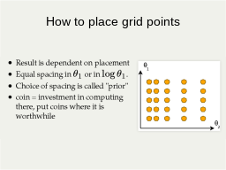
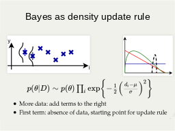
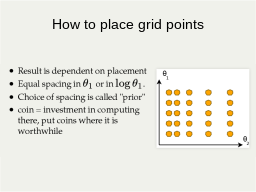
 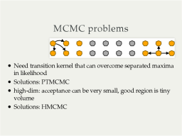
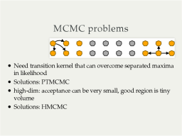
 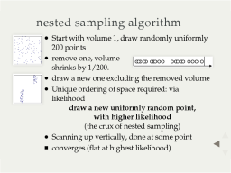
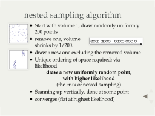
 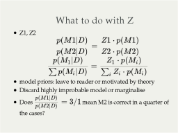
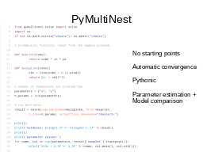
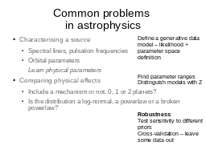
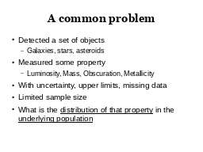
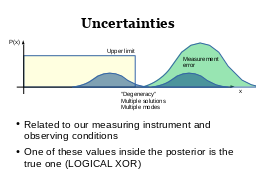
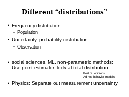
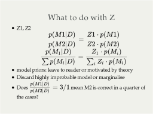
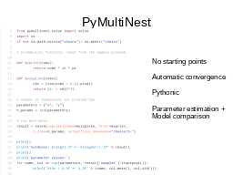
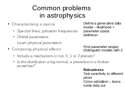
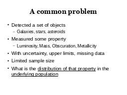
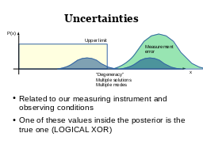
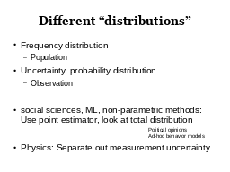
 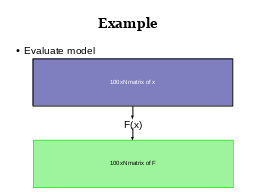
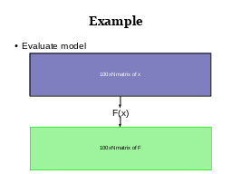
 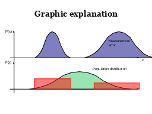
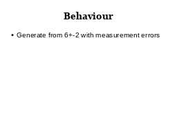
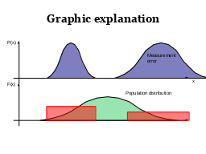
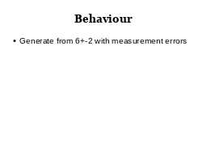


 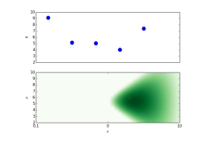
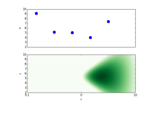


 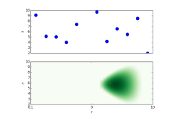
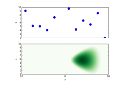


|